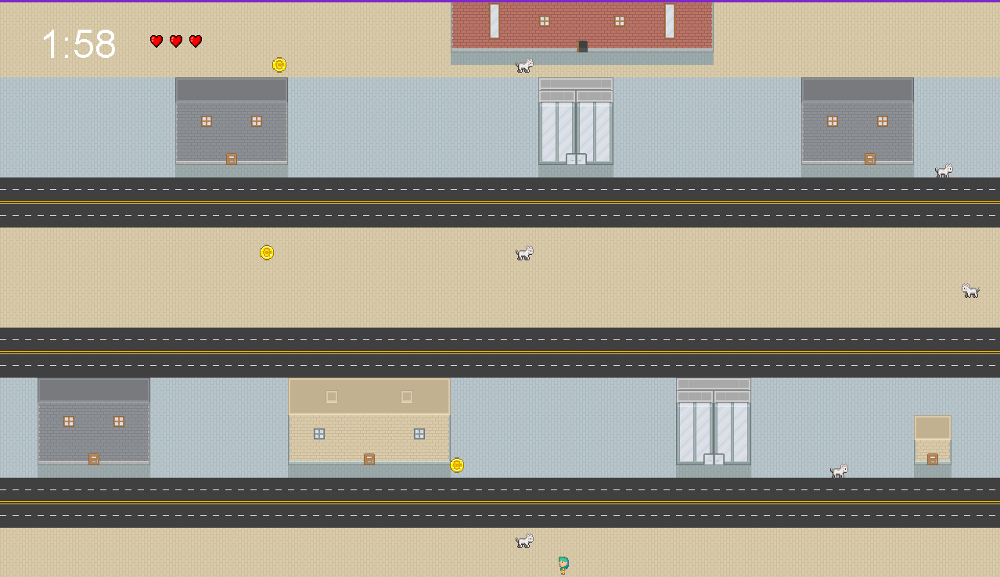

“The Chase” is a captivating game that my partner, Charlotte, and I developed as the final project for ICS 111 using Java. In this thrilling adventure, players must collect three gold coins and reach the opposite end of the map before the timer runs out. The journey is not without its challenges, as animals and cars roam the map, posing a potential hazard to the player. To add to the excitement, you begin with three lives, and getting hit by an obstacle will cost you a life and send you back to the starting point.
Throughout this project, I gained valuable experience in utilizing classes effectively in Java and honed my collaborative skills while working with Charlotte. Communication was essential to our success as a team, so we set up a Discord server to share information and exchange ideas related to the game’s development. After brainstorming and solidifying our concepts, we efficiently distributed the workload based on the classes required for the game.
In the development process, I took charge of several crucial aspects. Firstly, I handled the implementation of classes responsible for spawning cars and animals within the game. This helped create a dynamic and immersive environment. Additionally, I managed the implementation of player lives, ensuring that the game offered a fair yet challenging experience.
Beyond the class implementation, this project provided me with valuable insights into the realm of animations and sprite sheets. Making the character appear to move seamlessly involved storing various images in an array and displaying them based on the player’s key inputs. The resulting animations added a layer of polish and excitement to the gameplay.
Developing “The Chase” was an enjoyable and rewarding experience. I not only deepened my understanding of Java classes but also learned how to collaborate effectively within a team. Furthermore, exploring animations and sprite sheets expanded my skill set, opening up new avenues for future projects. I look forward to creating more captivating games in the future.